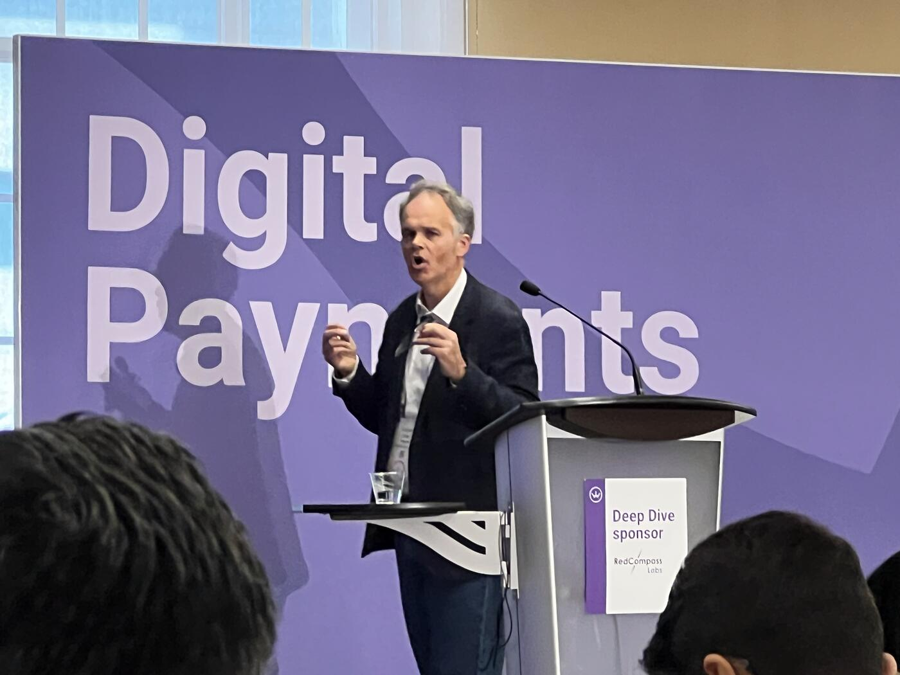
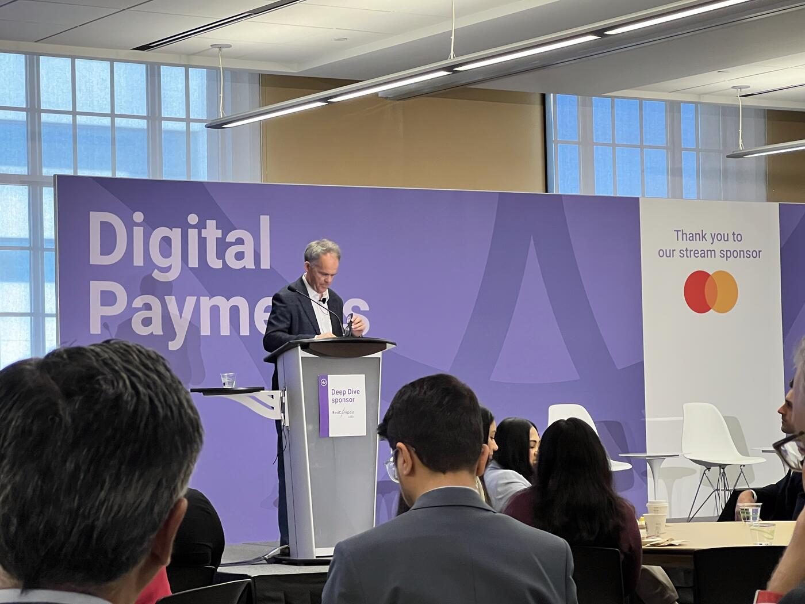

AI, Payments, and the Machinery of Civilization
Opening Keynote Reflections on Complexity, Trust, and "Qualified Optimism"
The session opened with a sweeping reflection on the growing intersection between artificial intelligence and the global payments ecosystem, framing payments not simply as financial infrastructure, but as "the machinery of civilization."
The speaker began with a provocative question: at what point does the complexity of payments become so immense that only AI, or even "supercomputer-level" systems, can realistically manage it?
"What checks require a supercomputer? Prepare that to what we do. How do we reach the place? How do we cross the threshold?"
From there, the keynote unfolded through what the speaker described as three "scenes."
Scene One — The Incomprehensible Complexity of Payments

The first centered on "the incomprehensible complexity of payments." The argument was straightforward but unsettling: modern payment systems have become so interconnected, fast-moving, and layered that traditional human oversight alone may no longer be sufficient.
Scene Two — What We Do Really Matters
The second theme elevated the stakes dramatically.
"What we do really matters."
The speaker emphasized that payments are foundational to daily life and societal stability:
"If I clear about payments, am I right? No paychecks. No one's buying food. No one's paying rent."
The remarks then moved from operational inconvenience to systemic risk, describing scenarios where failures in the financial system could trigger cascading consequences across economies.
"Imagine this, that probably, you know, the right bank loses the right and wrong payment system at the wrong time. And the governments have to step in to stop the dominoes falling, or certainly central banks."
The speaker described payments infrastructure as something far larger than technology platforms or banking rails.
"Payments are the machinery of civilization. They stitch together societies and economies."
This led directly into the core dilemma of the session: if AI becomes necessary to manage the complexity of financial infrastructure, what happens when humans no longer fully understand how those systems make decisions?
"If scene one is true, that actually we cannot manage this complexity without AI, what does that mean that we're putting AI into something that matters that much?"
"The people who build this thing out, who build this thing, don't seem to understand how it does what it does, and even why it does what it does."
Scene Three — Qualified Optimism

The keynote's third theme shifted from systems and infrastructure to mindset.
Referencing the 2008 financial crisis and the COVID era, the speaker reflected on uncertainty, survival, and resilience, especially from the perspective of smaller companies operating alongside large financial institutions.
"When the waves really affect us, if they take a knock on the banks, think what they can do to companies like us."
This introduced the "Stockdale Paradox," the famous leadership concept drawn from Admiral James Stockdale's experience as a prisoner of war. The speaker described it as the ability to hold two contradictory truths simultaneously: maintaining unwavering belief in eventual success while fully confronting present difficulties.
"To survive, we have to hold two seemingly contradictory thoughts in our head at the same time."
The speaker explained that neither blind optimism nor pure pessimism is sustainable.
"The optimists, the idealists, didn't survive."
"But neither the pessimists, who took some comfort in being right about how awful things were and could be, but they didn't survive either."
Instead, the survivors were described as "qualified optimists" — people capable of confronting reality without surrendering hope.
"And I think that's thing three. So we've got complexity, we've got importance, and we've got this idea of qualified optimism."
A Visceral Moment
Toward the end of the keynote, the speaker reflected emotionally on the current moment in AI, recalling the wave of anxiety and disruption that followed rapid advances in generative AI systems and headlines about "the SaaS apocalypse."
The feeling, they said, reminded them of something deeply personal:
"I remember the first time I held my first child in my hands. And all the wonder, the fear, trepidation, but the utter determination that we will find a way."
"It's visceral. It's a visceral moment, I think, that we're experiencing."
The session concluded by framing the conference itself as part of that collective effort to "find a way," bringing together technologists, infrastructure leaders, business executives, policymakers, and government voices to confront the future of AI and payments together.
The keynote then transitioned to the introduction of the next speaker, Alexandra Dostal (ISED Canada), who was welcomed to the stage to continue the discussion around innovation, economic development, and the future direction of the industry.
Key Takeaways
- Payments are "the machinery of civilization" — failures cascade into paychecks, rent, food.
- Modern payments may be becoming too complex for human-only oversight — but ceding it to AI raises a different problem: builders don't fully understand how the AI does what it does.
- The day's framing: "Qualified optimism" — the Stockdale Paradox applied to AI in finance. Neither idealism nor pessimism survives.
- The moment is described as "visceral" — wonder, fear, and determination together.
- Smaller players are especially exposed when banks take a hit — this is an ecosystem-survival conversation, not just a tech one.